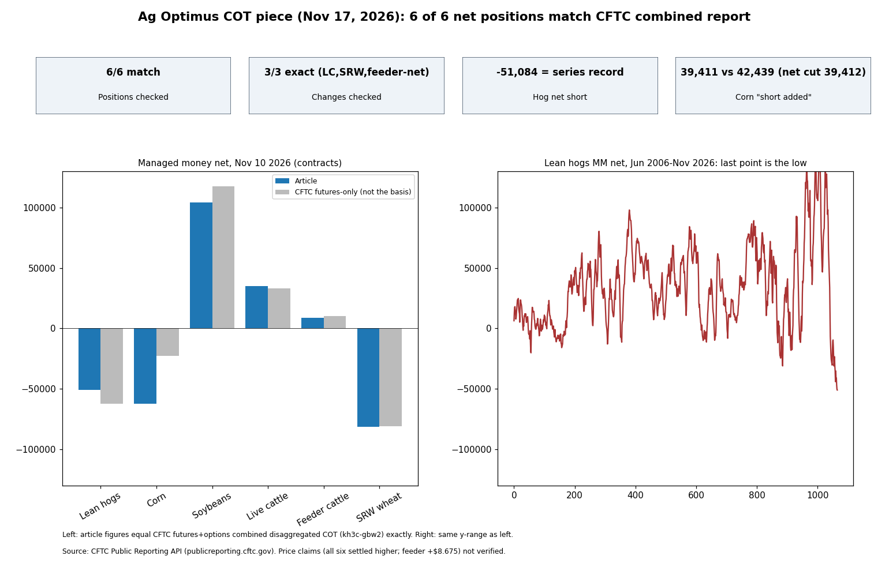

All six managed-money net positions as of Nov 10, 2026 match the CFTC combined (futures plus options) disaggregated report to the contract. The lean hog net short of 51,084 is the largest in the series, which begins June 2006. Overall rating: 0 Pinocchios.
| Claim | CFTC value | Result |
|---|---|---|
| Hogs net short 51,084, largest since June 2006 | -51,084, series low | True |
| Corn net short 62,311 | -62,311 | True |
| Corn added 39,411 short | short +42,439; net -39,412 | Mostly true |
| Soybeans 104,063, lowest since Aug 11 | 104,063; Aug 11 101,362 | True |
| Live cattle 34,880, cut 16,812 | same | True |
| Feeder cattle 8,586 | 8,586 | True |
| Wheat net short 81,367, bought 7,359 | same | True |
| All six settled higher; feeder +$8.675 | not found | Not checkable here |
Confidence: high for positioning figures (primary source, exact match); no confidence on price claims.